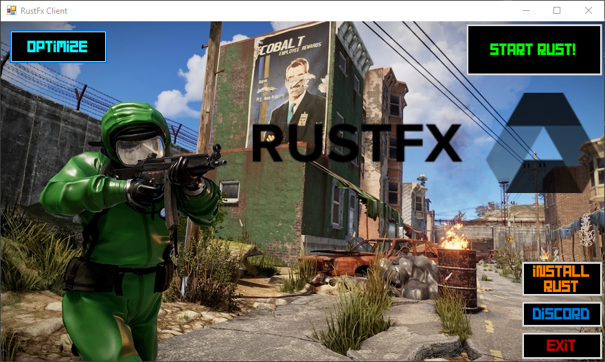
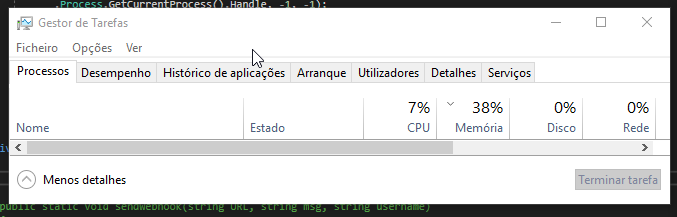

Home
Launcher
Discord
RustFx Launcher
RustFx Launcher is currently in development.
The devs were nice enough,
to give you a sneak peak of how the launcher may look
We are looking right now at
how to update the cracked rust client installed
So you don't have to always install
The new version

CPU Optimizer in work. Ran on a testing environment.
CPU optimizer will optimize
the cpu usage of the launcher
